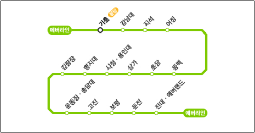

ㆍ 안전하고 즐거운 이용을 위하여 아래 물품의 반입을 제한합니다.
ㆍ 동물에게 음식을 주거나 플래시를 켜고 촬영하지 마세요.
ㆍ 가지고 오신 도시락은 피크닉 영역에서 이용해 주세요.
⋇ 대기 동선에서 기다리기 어려운 장애인 손님을 위하여 탑승 예약을 도와드리고 있으니 근무자에게 문의해 주시기 바랍니다.
에버라인 종점에 내려서 셔틀버스(무료)로 에버랜드,
케리비안 베이까지 이동
⋇ 에버라인 운행시간 : 05:30~23:30

- 5002번 : 신논현역 - 강남역 - 양재역 경유
- 5700번 : 강변역 - 잠실역 - 송파역 - 수서역 경유
- 66-4번 : 수원역 - 수원 - 동백 - 용인 경유